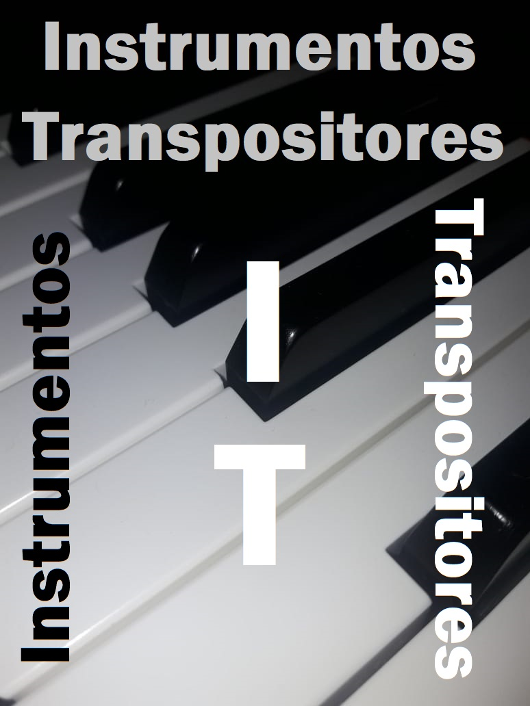

Não foi possível carregar a ficha. Recarregue a página para tentar novamente.
REFERÊNCIA MUSICAL · 43 INSTRUMENTOS
Da partitura
ao som.
Em que tom está o instrumento? Como escrever e ler sua partitura? Consulte as fichas do aplicativo original.
Consultar instrumentos